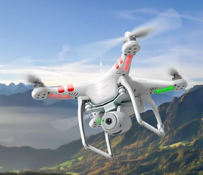

Om Mig
Jag är en 16-årig kille från Billdal i södra Göteborg. Jag har länge varit intresserad av att ta bilder och redigera videor. För ett tag sedan skaffade jag en DJI Phantom 2 och sen dess har jag flugit och fotat med den många gånger.
Om Phantom 2
DJI Phantom 2 Vision är en radiostyrd "drönare", eller helikopter med kamera, för er som inte vet vad en drönare är. Man kopplar dess kamera till en smartphone via WiFi så får man kamerabilden direkt
på telefonen. Sen är det bara att lyfta och plåta vad som helst från så högt som åttahundra meter upp i luften, om man nu någonsin skulle vlija komma så högt...
Kameran tar kort med ganska stort synfält (120°) vilket gör att bilderna buktar utåt, detta går dock lätt att fixa med lite bildredigering.
Gå till DJI Phantom 2 Visions Hemsida för mer information om drönaren!